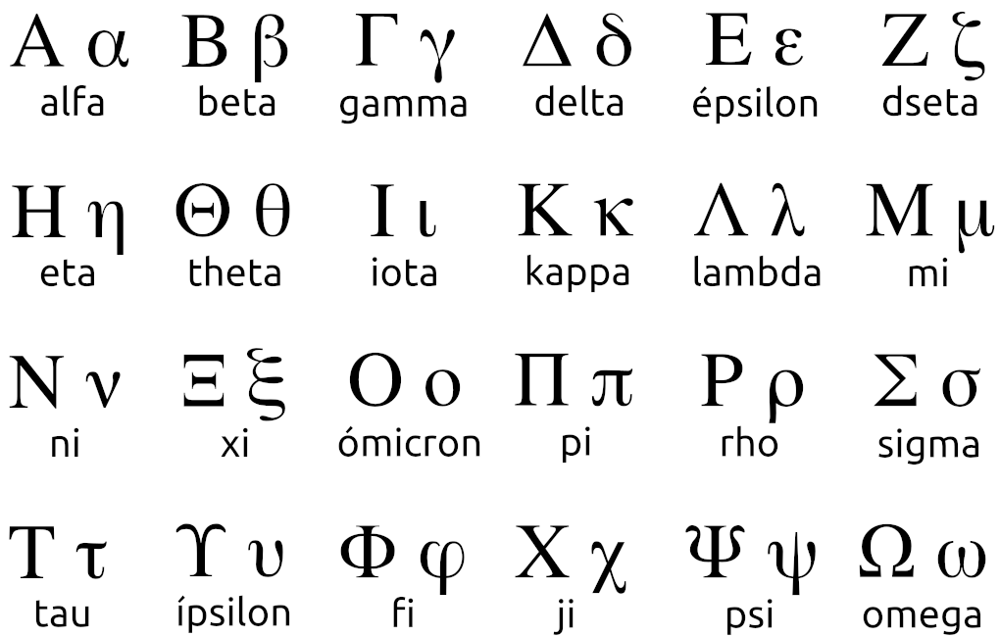

Es una materia que desde sus raices tiene una historia detrás de como roma se disolvió y de ahí surgieron los primeros lenguajes como el italiano portugués español etc y de ahí pasaron por generaciones ayuda a no perder la historia y aprenderemos a hablar los idiomas aunque casi no se utiliza el latín pero es parte de nuestra cultura siempre y cuando no sea perjudicada por qué ahora en la actualidad no se utiliza ni el latín ni el griego por su materia es sorprendente cada día nuevos temas nuevas palabras y entonaciónes de voz
